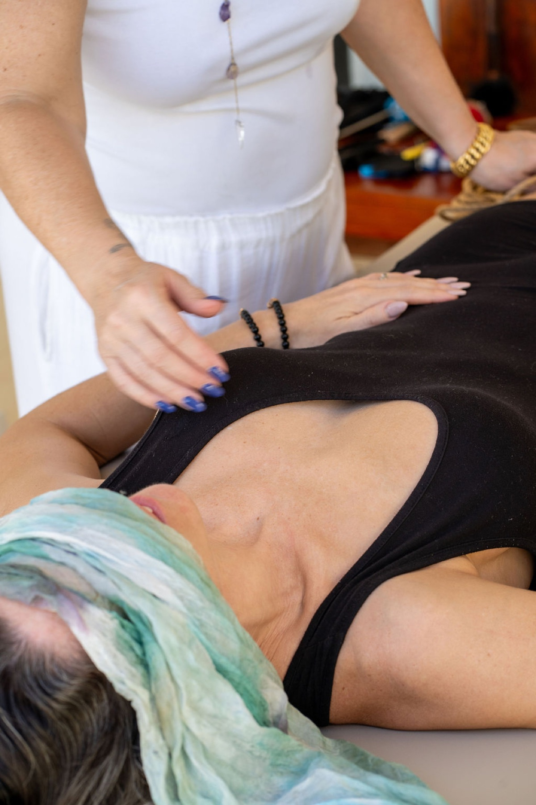
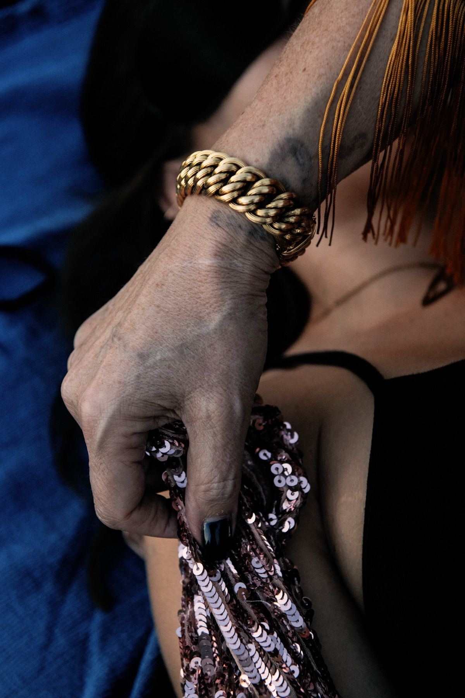
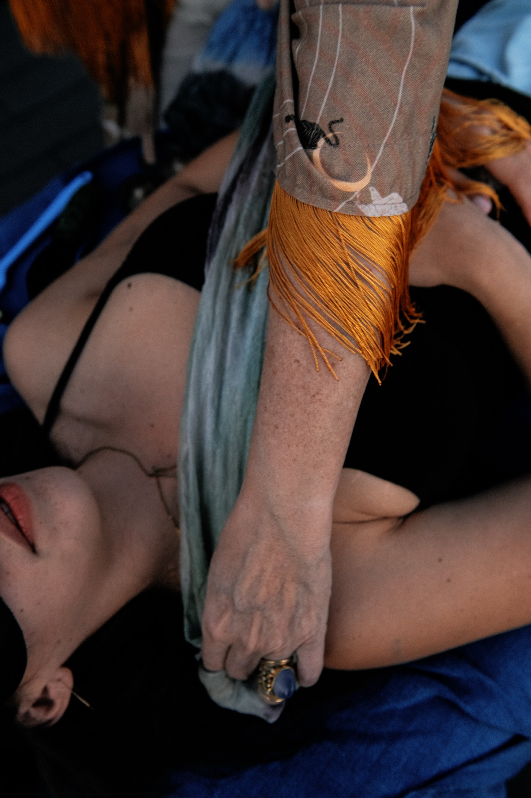

The
Touch
Reset
Your body braces. Shuts down. Performs.
A 12-week reboot for the way you experience intimacy, connection and pleasure, so your body becomes a compass you can actually trust.
Know what lights you up.
Know what has you go quiet.
Know your yes. Know your no.
Know what turns you on, and what turns you off.
And have the confidence and tools to ask for what you actually want.

Not so you can make yourself want more touch.
Not so you can push through a no.
So you can recognise what is actually happening before you automatically react to it.
Is this a real no?
Is something old being activated?
Am I bracing, performing or going quiet?
Does this actually feel good?
What do I want instead?
Then you practise what comes next.
Asking. Adjusting. Saying yes. Saying no. Asking for more. Asking for something different. Stopping.
Because the goal isn't to make your body respond the "right" way.
It's to know your body well enough that you can tell what's true for you, and have the tools to do something with that information.
I want you to be able to recognise:
This lights me up.
This has me go quiet.
This is my yes.
This is my no.
This is an old pattern.
This is what I actually want instead.
You'll know more about your Pleasure Language and your Touch Languages, but more importantly, you'll know how to use that information in real life.
With yourself. In conversation. In touch. In intimacy. And, if you want it, in sex.
Your body becomes a compass you know how to read.
You don't need to have the same story as somebody else in the group.
You don't need to be in a relationship.
You don't even need to know exactly what's wrong.
You may simply know that the way you're experiencing intimacy, touch or pleasure isn't the way you want to keep experiencing it.
You love each other, but somewhere along the way, touch changed.
Maybe your partner reaches for you and you brace. Maybe you're the one doing the reaching, and you can feel your partner disappearing before you've even touched them.
Sex may have stopped altogether, or you're still having it but one or both of you is going through the motions.
You want to find your way back without making either of you the problem.
Something that used to work doesn't anymore.
Maybe illness, children, stress, trauma or simply life has changed the way your body responds.
Perhaps you've quietly started wondering:
"Maybe this is just how I am now."
Maybe you've called it mismatched libido.
But frequency might not be the whole story.
You may simply experience pleasure differently, different touch, different pacing, different energy, different ways of being approached.
Maybe you don't want less. Maybe you want different.
Maybe you're single, dating, between relationships or simply doing this for yourself.
You can still recognise the patterns: performing, accommodating, struggling to receive or going blank when somebody asks:
"What do you want?"
You don't need another person to start discovering the answer.
Different bodies. Different histories. Different desires. Different patterns.
The work is learning yours.
After our sessions, a lot more of my feelings about sexuality came up. My partner and I have been navigating the walls I built to protect myself. Connecting my habit of joking about sex to childhood trauma brought tears, but also profound insight. Now I feel less anxious, and we're having more fun and connection when we make love. For the first time, sex feels integrated with who I am, not just a set of activities.
Miki · Coach, Canada
Maybe you have.
You've done therapy. You've read the books.
You've taken the tantra course, gone to the retreat, learned the communication tools or explored your sexuality in ways most people never have.
You understand yourself.
You may even know exactly why you respond the way you do. Then the moment actually arrives.
Your partner reaches for you.
You want to ask for something. You feel yourself shutting down.
You want to say no. You want to receive. You notice your desire has disappeared.
Something gets activated.
And before you've had time to think about everything you know… your body has already answered.
That doesn't make everything you've learned useless.
It means there's another piece to practise.
Not just understanding your patterns afterwards.
Recognising them while they're happening.
Creating enough space to notice:
Is this actually a no? Is this an old pattern?
Am I activated right now?
Do I want less, or do I want something different?
What would feel good instead?
Then learning what to DO with that information.
This is why The Touch Reset is built around practice.
Structured communication. Structured time. Structured self-touch. Structured partnered touch.
Small places where you can notice what happens in your body, communicate it and practise something different, without needing to get intimacy "right."
Because knowing yourself intellectually is one thing.
Being able to hear yourself in the moment - and trust what you hear - is another.

This is one of the questions we come back to again and again inside The Touch Reset.
Because not every no means the same thing. Not every brace means the same thing. Not every loss of desire means you don't want intimacy.
Sometimes your body is giving you a very clean answer:
No.
I don't want this.
Not now.
Not like this.
Not with this person.
Not this kind of touch.
That deserves to be listened to.
But sometimes something else is happening.
Something gets activated.
Your body recognises something familiar, and an old protective pattern starts running before you've had time to work out what's actually happening.
You pull away.
Go quiet.
Freeze.
Perform.
Accommodate.
Push through.
Or lose access to what you wanted altogether.
The work isn't to override either response.
It's learning to feel the difference.
To become familiar enough with yourself that you begin to recognise:
This is a boundary.
This is fear.
This is activation.
This is an old pattern.
This is desire.
This is pleasure.
This is actually what I want.
And then you get to choose what happens next.
Maybe that's a clear no.
Maybe it's asking your partner to stop.
Maybe you need more space.
Maybe you need to slow everything down.
Maybe you realise you don't want less touch at all.
You want different touch.
This is where your body starts becoming your compass.
Not because every sensation is an instruction you blindly follow.
Because you're learning your own signals well enough to discern what they're telling you.
And the more clearly you can hear yourself, the more clearly you can communicate with somebody else.
This is my yes.
This is my no.
This is what I want.
This is what I don't want.
This is what I'd like to try.
This is where I need you to slow down.
That's where intimacy starts becoming something you participate in rather than something that simply happens to you.

Most of us haven't been taught how to practise intimacy.
We wait until we're already in it.
Until someone reaches for us.
Until we're having the difficult conversation.
Until sex is on the table.
Until somebody wants more and somebody wants less.
Then we try to work out what we want while we're already inside the moment.
The Touch Reset gives you somewhere else to start.
We create structure around intimacy so you have space to actually notice yourself.
Not structure to make intimacy rigid.
Structure so connection doesn't depend on luck.
The noticing gives you information. The information gives you choice.
We start with structured time.
You know when you're beginning. You know when you're finishing. You don't have to wonder where something is going or how long it's going to last.
Then structured communication.
You practise saying what is true for you without fixing, defending, interrupting or trying to manage somebody else's response.
Then structured self-touch.
Before asking somebody else to know what you want, you begin discovering it for yourself.
What feels good?
What doesn't?
Where do you soften?
Where do you disappear?
What kind of sensation, pressure, pace, attention or space does your body actually respond to?
Then we bring that into structured partnered touch, when that's appropriate for you.
Now you're not simply hoping somebody guesses correctly.
You're practising asking.
Adjusting.
Receiving.
Giving.
Stopping.
Changing your mind.
Wanting more.
Wanting less.
Wanting something different.
The structure is what creates the space to notice.
The noticing gives you information.
The information gives you choice.
And choice changes the way you experience intimacy.
You don't need a partner to do this work.
The work begins with your relationship with your own body. Partnered practices are there for those who have someone they want to practise with, they're not a requirement for getting something from The Touch Reset.
When I talk about pleasure, I don't only mean sex.
And I don't only mean orgasm.
I mean sensation.
Enjoyment.
Warmth.
Connection.
Turn-on.
Joy.
That feeling of being completely inside your body rather than watching yourself from somewhere outside it.
Aliveness.
For some people, that absolutely includes more sexual pleasure.
More desire.
Better sex.
Deeper orgasms.
Being able to surrender further into sensation instead of monitoring what's happening or waiting for it to be over.
For others, pleasure starts somewhere much quieter.
Enjoying being touched again.
Letting a hand rest on your body without immediately wondering what comes next.
Feeling something because you like how it feels, rather than because you're trying to get somewhere.
Discovering that self-touch doesn't automatically mean genital touch or masturbation.
It can simply mean:
What happens when I give my body something it enjoys?
Because before you can consistently ask another person for the kind of touch that reaches you, it helps to discover what that is.
What pressure do you like?
What pace?
What kind of contact?
What creates anticipation?
What has you soften?
What has you hungry for more?
What turns you off?
What has your whole body come alive?
This is where we begin exploring your Pleasure Language and your Touch Languages.
Not as another personality test.
Not so you can stick a label on yourself and announce, "This is what I am."
They give you language for something you may already have been experiencing but haven't known how to explain.
You might discover that what you thought was a lack of desire wasn't quite that simple.
Maybe you didn't want less.
Maybe you wanted different.
Different touch.
Different pacing.
Different energy.
Different kinds of pleasure.
Different ways of being approached.
Different ways of being met.
Once you start discovering that for yourself, you can begin bringing it into intimacy with somebody else.
Instead of:
"You should know what I like."
Or:
"Something must be wrong with me because I don't like what I'm supposed to like."
You have language.
You have information.
You have choices.
And you can start saying:
"This. More like this."
We don't start by trying to fix your relationship.
And we definitely don't start by asking you to push through what your body is already telling you.
We start by learning how to listen.
Over 12 weeks, we'll move through four stages.
What is my body already doing?
Before you can change a pattern, you need to be able to notice it.
This is where we slow things down enough for you to begin recognising your automatic responses around intimacy, communication and touch.
We'll use practices including Touch Base, Dyads and the half-second gap to help you catch those moments earlier.
Not to immediately change them.
First, we notice.
What is this response actually telling me?
Once you can recognise what's happening, we start getting curious about what's underneath it.
This is where some of the deeper work happens.
We'll explore the patterns and beliefs underneath your responses, using the tools I bring from my years of work with intimacy, couples and trauma, including EMDR and hypnotherapy where appropriate.
The aim isn't to dig endlessly into your past.
It's to give you more choice in the present.
What actually feels good to me?
Once we have more awareness, we get to become curious about pleasure.
This is where we explore your Touch Languages, Pleasure Language and Touch Map.
You start discovering the kinds of touch, sensation, pace, pressure, energy and attention your body actually responds to.
We begin with your own body.
Because it's very difficult to ask somebody else for what you want when you don't yet know what that is.
Can I bring what I've discovered into intimacy with somebody else?
This is where knowing yourself starts becoming relational.
You practise asking for what you want.
For those with a partner, we'll use structured touch dates and partnered practices to give you somewhere to practise this together.
If you don't have a partner, you can still do this work. The foundations of asking, receiving, boundaries, pleasure and self-trust begin with you.
Sex can absolutely change as a result of this work.
But sex isn't where we start.
We start with your ability to recognise yourself.
Then discern.
Then discover.
Then communicate and receive.
That's the reset.
The experience began before the night itself, with the personalised quiz and videos. For once, I didn't micromanage. I trusted. When I stepped into the space he created, I felt deeply held. He was present, confident, attuned, in a way I didn't know I needed.
Anna Shapiro
I wanted to create something meaningful, not just for her, but for us. Your guidance gave me confidence. I stopped second-guessing. For the first time in years, I knew what she needed. Watching her soften, open, and receive was everything.
Ben Shapiro

The Touch Reset is designed to be lived, not completed.
You don't need hours every day.
Each week, we'll focus on one piece of the work, practise it together, then you'll take small practices into your actual life.
Because this isn't about being brilliant at The Touch Reset.
It's about what starts changing outside it.
You'll have a live group session with me where we explore that week's focus, practise together, ask questions and work with what is actually coming up for you.
You'll then have small daily practices to bring the work into your body and your relationships.
Not another two-hour lesson to watch.
Something you can actually use.
You'll also have the community between calls, so when something comes up in real life, a reaction, a win, a question, an unexpected no, an oh my God, I finally understand what I've been doing, you have somewhere to bring it.
Throughout the 12 weeks, you'll build a collection of practices you can keep returning to, including:
These aren't things to race through or tick off.
They're tools you learn to use when you actually need them.
When you can't work out what you're feeling.
When you and your partner keep having the same conversation.
When touch starts feeling loaded.
When you don't know what you want.
When you know exactly what you want but can't quite ask for it.
When you want to reconnect.
When you want to play.
When you want to explore more pleasure.
Or when you simply want to come back to yourself.
By the end, you're not left with a programme you once completed.
You have a set of practices you know how to return to.
So much of what happens around intimacy, touch, desire and pleasure stays hidden.
We don't talk about it.
We think we're the only one.
And often, that's where shame grows.
The beauty of doing this work in a group is that we get to bring some of that out of isolation and into the light.
When one person has a breakthrough, others learn through it too.
When somebody puts words to something you've felt but never been able to explain, you get to recognise:
"Oh. I'm not the only one."
We get to bring some of that out of isolation and into the light.
And when we practise together, you're not there to compare yourself with anybody else.
You're there to notice yourself, where you might be holding a pattern, what your body is telling you, and what becomes possible when you practise something different.
We bring what has often been hidden in isolation into the light, where it can be met with curiosity rather than shame.
Different bodies. Different experiences. Different patterns.
We learn together while discovering what is uniquely ours.
Twelve weeks. A body you actually live in for the rest of your life. You have tried the other things.
This is the thing that works.
I came believing I was in control. I left with a level of clarity I didn't realise I was missing.
Rodrick · Investor & Strategist, UK
I was that woman.
If you'd told me I didn't like sex, I'd have thought you were crazy. I've always loved sex.
Then I had children, and something changed.
I froze. I needed more and more sensation to feel anything, and I couldn't understand what had happened to me.
How could I love sex and want intimacy, yet have a body that seemed to be responding completely differently? That's the question that broke everything open.
That question took me on an extraordinary journey.
I explored conscious sexuality, Tantra, orgasmic meditation and the Erotic Blueprints. I trained deeply in intimacy, relationships and trauma. At one point, I even trained and worked as a professional dominatrix.
I wanted to understand the body.
Pleasure. Touch. Desire.
What has us open. What has us disappear. Why what we consciously want isn't always what our body seems to do.
At the time, I didn't understand everything my own body was carrying. Later, I came to understand parts of my own history differently, including rape.
There was also a period when my body was speaking very loudly. I spent around nine months in and out of hospital because I was fainting. I didn't have the whole story yet.
But I kept following the questions.
Why does a body that wants pleasure sometimes shut down? Why can we consciously want intimacy while something in us braces? Why does one kind of touch bring us alive while another makes us disappear?
How do we know when something is a genuine no, and when an old protective pattern is running? How do we learn to trust ourselves again?
Those questions became part of my life's work.
Over 27 years of exploration and training, and the last 15 working deeply with couples and trauma, I've watched these patterns show up again and again.
Different bodies. Different relationships. Different histories.
But so often, underneath it all, people are trying to understand: What is my body actually telling me?
The Touch Reset has grown out of all of that.


Not to make you more sexual. Not to teach you to push through a no. Not to give you another collection of intimacy techniques to perform correctly.
To help you become deeply in tune with yourself.
This lights me up. This has me go quiet. This is my yes. This is my no. This is an old pattern. This is what I actually want.
Then to give you the tools, language and structure to do something with what you discover.
So your body becomes a compass you know how to read.
As seen on ITV, with Ferne McCann
You don't need to arrive at The Touch Reset knowing exactly what's happening.
You might know your body braces.
You might know you've stopped wanting the kind of intimacy you're having.
You might be missing sex and connection with your partner and have no idea how to find your way back.
You might know there's more pleasure available to you, but you haven't yet discovered how to access it.
Or you might simply be tired of wondering:
"Is this just how it is now?"
It doesn't have to be.
For 12 weeks, we'll get curious together.
You'll learn to recognise your patterns, discern what your body is actually telling you, discover what lights you up and practise communicating what you want.
Not by forcing yourself to become someone different.
By becoming much more deeply acquainted with who you already are.
12-week live group experience
This isn't a pressure call.
It's a conversation to see whether The Touch Reset is the right place for what you're experiencing right now.
You can ask questions, tell me what's been happening, and we'll both get a sense of whether this is a fit.
If it is, I'll tell you what happens next.
If it isn't, I'll tell you that too.
Allow around two hours a week at most, including the live session and your practices. The practices are designed to fit into real life. Some will take only a few minutes. This isn't about giving you another enormous thing to keep up with. It's about practising small things consistently enough that you begin to notice what changes.
No. The Touch Reset begins with your relationship with your own body. There are partnered practices for those who have someone they want to explore with, but having a partner isn't a requirement. If you're single, dating, between relationships or simply choosing to do this work for yourself, there is plenty here for you.
No. Your partner doesn't need to attend the programme with you. There may be practices you choose to invite them into, but the work doesn't depend on them participating in the programme. You're learning to recognise your own patterns, understand what you want and communicate that more clearly. That can change a lot in itself.
You are welcome to bring your whole history with you. We won't assume every response in your body is trauma, and we won't ask you to push through something because it is labelled a "pattern." Part of this work is developing greater discernment around what you're experiencing, including when something is a genuine boundary and when an old protective response may be present.
The Touch Reset is a group programme, not a replacement for individual therapy or medical care. If something needs support beyond the scope of the programme, we'll treat that appropriately.
No. The group is there so we can learn and practise together, not so you have to disclose intimate details you're not comfortable sharing.
You choose what you share. You can learn enormously from witnessing somebody else's question, breakthrough or pattern without having to tell the room everything about your own life.
You don't have to expose yourself to belong in the room.
The sessions are recorded, so you can catch up if you need to miss one. That said, this is a live, practice-based experience, so I'd encourage you to come live whenever you can. There's something different about practising together, asking questions as things arise and learning from what happens in the room.
No. Sex is absolutely welcome here. So are desire, turn-on, orgasm, kink and sensual, energetic and sexual pleasure. But pleasure is bigger than sex.
We also work with touch, sensation, communication, boundaries, receiving, asking, connection, joy and aliveness.
For some people, better sex will be part of what changes. For others, the first shift may be much simpler: "I can actually feel what I want." And that's a very powerful place to begin.
The Touch Reset isn't something I can do to you.
It's something we practise together.
Your part is to show up, engage with the work and bring the practices into your life.
My part is to give you the structure, tools, teaching and support to do that.
If you've participated in at least 80% of the programme, genuinely engaged with the practices, and at the end of the 12 weeks you feel you need more support integrating what you've learned, I'll give you an additional 30 days of group support at no extra cost.
I don't want you reaching Week 12 thinking:
"Right. Now I'm on my own with this."
I want you to leave knowing how to keep using what you've learned.
There are no refunds for The Touch Reset.
Founding cohort. Only 15 spots.
What does my body want?
Why am I pulling away?
Why am I not as turned on as I used to be?
Why does this kind of touch do nothing for me?
Why does that kind light me up?
Is this a no?
Is this an old pattern?
How do I tell my partner what I actually want?
You don't need to have all of those answers before you come.
That's what we're here to explore.
A 12-week reboot for the way you experience intimacy, connection and pleasure, so your body becomes a compass you know how to read.
Founding cohort · 15 placesCome and have a conversation with me. We'll look at what's happening for you, what you want to change, and whether The Touch Reset is the right place to do that work.